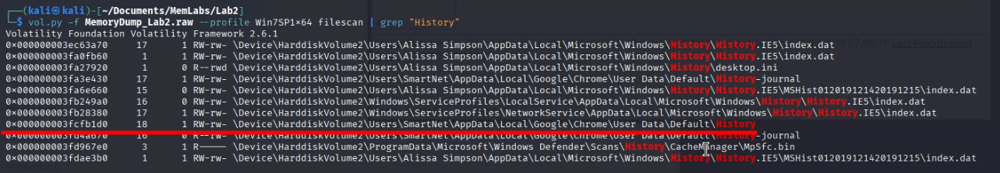

MemLabs - 2 - Write-Up
En este write-up, me adentro en los retos de MemLabs, una serie de laboratorios diseñados para poner a prueba nuestras habilidades en el análisis de volcados de memoria. Equipado con Volatility, una de las herramientas más potentes para diseccionar sistemas vivos o caídos, iré desenterrando credenciales, procesos sospechosos, conexiones de red y cualquier pista que hayan dejado atrás.
En esta ocasión nos encontramos delante del segundo reto del laboratiorio: MemLabs Lab 2 - A New World. Este desafio supone una dificultad fácil, igual que el anterior, por lo que no tendría que suponernos ningún problema.
Enunciado
Uno de los clientes de nuestra empresa perdió el acceso a su sistema debido a un error desconocido. Supuestamente, es un activista "ambiental"(traducción de "environmental") muy conocido. Como parte de la investigación, nos comentó que sus aplicaciones de uso habitual son los navegadores, sus gestores de contraseñas, etc. Esperamos que puedas analizar este volcado de memoria, encontrar su información importante y devolvérnosla.
¿Qué sacamos en claro?
- Activista "ambiental"(variables de entorno).
- Usaba el navegador.
- Usaba gestores de contraseña.
Además, este reto consta de 3 flags.
Análisis del perfil
Para sacar la memoria debemos usar el siguiente comando:
vol.py -f MemoryDump_Lab2.raw imageinfo
Al hacer esto, nos saldrá lo siguiente:
Yo me quedaré con el perfil Win7SP1x64, ya que creo recordar que usa siempre el mismo sistema, por lo que el perfil siempre es el mismo.
Análisis de la memoria
Como dije antes, debemos encontrar 3 flags con las pistas que nos deba el enunciado. Así que vamos a encontrarlas.
Variables de entorno
En esta ocasión no tengo nada con lo que filtrar la busqueda, por lo que toca buscar a mano. Por suerte para nosotros, esta línea se repite mucho:
Para hacer la busqueda usé el parámetro envars.
La frase está cifrada en base64, y se trata de la primera flag del reto.
Navegador y Gestor de contraseña
Con navegadores podemos entender 2 cosas: buscadores como chrome, edge, opera, etc. o el propio navegador del sistema, el explorador de archivos.
Veamos las 2 posibilidades. Empecemos viendo los procesos activos e intentar ver el navegador(internet) que usaba:
Para ver los procesos podemos usar pslist, pstree o psscan
Encontramos cosas muy interesantes en los procesos. Entre ellas que usaba el navegador Google Chrome y el gestor de contraseñas KeePass
Ahora podemos analizar el explorardor de archivos, para ello usamos el siguiente comando:
vol.py -f MemoryDump_Lab2.raw --profile=Win7SP1x64 iehistory
Encontramos 3 archivos interesantes, pero uno de ellos el primero no se encuentra cargado en memoria, puede que sea de otro reto.
Vamos a descargarnos los 2 archivos y ver que contienen:
Encontramos una contraseña en el archivo Password.png:

No sabemos para qué podríamos usarla pero la guardamos.
El archivo Hidden.kdbx es como un excel, son tablas en las que guardas contraseñas, obviamente cifradas por una contraseña maestra.
Para poder abrir el archivo, necesitaremos instalarnos el mismo gestor de contraseñas que usaban en la máquina KeePass
Al abrirlo, nos pedirá una contraseña, que obviamente, es la que encontramos antes.
Dentro de la papelera, encontraremos la segunda flag del reto.
Y por último, nos queda buscar en el navegador, para ello necesitaremos extraer el historial de navegación de Chorme, para ellos podemos usar el siguiente comando con filtro:
vol.py -f MemoryDump_Lab2.raw --profile=Win7SP1x64 filescan | grep "History"

El señalado es el que nos interesa, es la base de datos del historial del navegador. Lo extraemos y lo abrimos con sqlitebrowser:
Para ver el historial, debemos irnos a Browse Data, y aquí dentro, elegir la tabla urls:
Encontraremos un enlace de mega el cual contiene un archivo llamado important.zip que, al intentar descomprimir, nos devuelve el siguiente mensaje:
La contraseña del zip es el SHA1 de la tercera flag del reto anterior
Ya habríamos terminado con laboratorio 2 y damos pie a los desafíos más complejos. Con este reto hemos aprendido a usar el módulo iehistory, el cual permite identificar las URLs visitadas, archivos descargados y actividad web relevante para análisis forense.
Ir al laboratorio anteriorIr al siguiente laboratorio